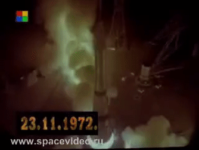
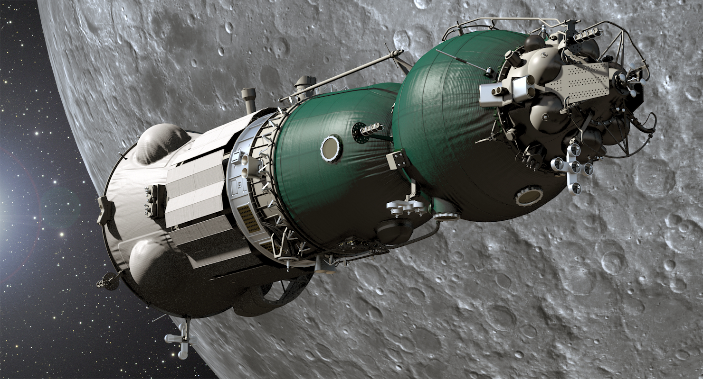
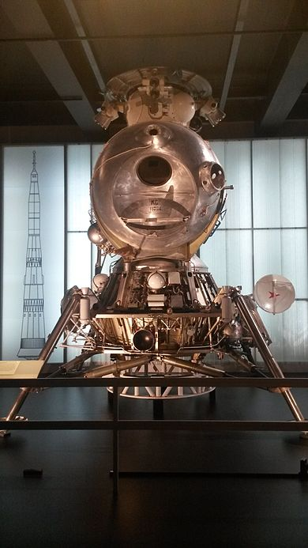

N1-L3 - Soviet Union(USSR)
What is the N1-l3?
The N1-L3 was a variant of the Soviet N1 rockets designed to go to the Moon
The basic N1 launch vehicle had three stages, which were to carry the L3 lunar payload into low Earth orbit with two cosmonauts.
The L3 contained one stage for trans-lunar injection; another stage used for mid-course corrections, lunar orbit insertion, and the first part of the descent to the lunar surface
a single-pilot LK Lander spacecraft; and a two-pilot Soyuz 7K-LOK lunar orbital spacecraft for return to Earth.
Why did the Soviets fail to get to the Moon?
N1-L3 was underfunded and rushed, starting development in October 1965, almost four years after the Saturn V
The project was badly derailed by the death of its chief designer Sergei Korolev in 1966. Each of the four attempts to launch an N1 failed
The second attempt resulted in the vehicle crashing back onto its launch pad shortly after liftoff and causing one of the largest artificial non-nuclear explosions in human history.
The N1 program was suspended in 1974, and officially canceled in 1976. All details of the Soviet crewed lunar programs were kept secret until the Soviet Union was nearing collapse in 1989.
Launches
| Laucn | Serial Number | Date | Outcome |
|---|---|---|---|
| 1 | 3L | 21/02/1969 | Failure - Leaked propellant caused fire destroying power supply wiring + multiple engine shut offs, first stage shut down early where rocket then fell back to ground and exploded |
| 2 | 5L | 03/07/1969 | Failure - Rocket lifted off and just cleared tower until all but 1 of the 30 engines shut off causing it to crash down onto the pad with 2300 tons of propellant, destroying the pad and creating one of the largest non-nuclear explosions |
| 3 | 6L | 26/06/1971 | Failure - Uncontrolled roll just after lift off which increased to nearly 40° per second, vehicle shortly after disintergrated from structural loads |
| 4 - Final Launch | 7L | 23/11/1972 | Failure - All was well until 6 abrupt engine shut down causing a fire in the boattaul of the booster resulting in first stage breaking up at t+107s into flight |
| 5 | 8L | N/A | Canceled as program was canceled in May 1974 |
How would have it got to the Moon?
Soyuz 7K-LOK - Лунный Орбитальный Корабль
This was the Orbital Module which had a crew capacity of 2
Only a dummy made it into orbit ontop of a "Proton" rocket
LK Lunar Lander - ЛК
This was the lunar lander which had a crew capacity of 1
It was designed to be on the lunar surface for a maximum of 48 hours
Some facts about the N1-L3
- The N1 has a payload capcity of 50 metric tons
- It was one of three proposed rockets to the Soviet military with the N1 being the largest
- The first stage remains the most powerful rocket stage to date with a thrust at sea level of 45,300kN
- It was also design to be adapted to be able to launch military space stations and later a crewed flyby of Venus and Mars
- Due to its power, along with the Saturn V it is one of the few vehicles that enter in the class of "Super heavy-lift launch vehicle" (Able to lift 50 tons+ to Low Earth Orbit (LEO)